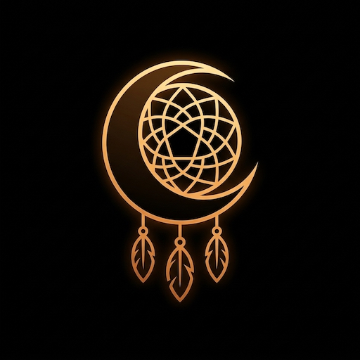

👤 Subscriber Login (No API Key Needed)
Use the same email at checkout, then tap Check / Activate Access. After checkout this phone activates automatically and saves your Access Code; keep it to sign in on other devices.
Free forever without an account: 🎤 Dictation, 🔊 Read Back, device-voice narration and the offline 🔮 symbol guide.
For the app owner's testing. A key saved here is used instead of subscriber credits.
Model IDs apply to subscriber requests too. Leave blank for the defaults.
Developer keys stay on this phone and go only to the service they belong to. Order of use: developer keys first, then subscriber credits.
You’ve used all 5 free dream sessions. Subscribe to unlock 25 midnight creations every month. Your saved dreams stay open, and dictation, Read Back and the offline symbol guide stay free.
🔒 Subscribe for Pro Access (£12/mo)